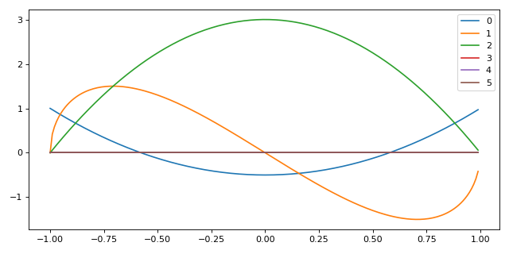

Legendre Polynomials
Legendre polynomails are solutions to Legendre’s differential equation,
\[\label{eq:legendrede}
\frac{\dif{}}{\dif{x}} \left[ (1-x)^2 \frac{\dif{}}{\dif{x}} P_n(x) \right] + n(n+1) P_n(x) = 0\]
These are encountered frequently when solving Laplace’s equation in spherical coordinates.
This differential equation can be solved using a power series method.
The equation has regualr singular points at \(x=\pm 1\), so solutions only converge in the region \(|x|<1\).
When \(n\) is an integer, the solution \(P_n(x)\) that is regular at \(x=1\) is also regular at \(x=-1\), and the solution terminates.
These solutions, \(P_n\), are called the Legendre Polynomials, with each being an \(n^{\rm th}\)-degree polynomial, expressed by Rodrigues’ Formula:
\[\label{eq:rodrigues}
P_n(x) = \frac{1}{2^n\ n!} \frac{\difp{n}{}}{\difp{n}{x}} \left[ (x^1-1)^n \right]\]

Fig. 1 The Legendre polynomials of degrees 0 to 5.
Legendre Polynomials from the Generating Function
- Formal Power Series
A formal power series is a generalisation of the concept of a polynomial, where the number of terms is allowed to be infinite.
A formal power series can be considered in the same way as a normal power series, but we ignore considerations of the convergence by assuming that a variable, \(X\), denotes any numerical value.
For example, the series
\[A = 1 - 3X+ 5X^2 - 7X^3 + 9X^4 - 11X^5 + \cdots\]
As a power series, one property of this series is that it has a radius of convergence equal to 1.
As a formal power series the only relevent information is that the sequence of coefficients,
\([1, -3, 5, -7, 9, -11, \dots]\).
Thus a formal power series merely records the sequence of coefficients.
- Generating Function
A generating function is a formal power series in one indeterminate, the coefficients of which encode information about a sequence of numbers, \(a_n\), which is indexed by natural numbers.
The Legendre Polynomials can be described by a generating function,
\(g(t,x)\),
\[\label{eq:legendregen}
g(t,x) = \frac{1}{\sqrt{1- 2xt +t^2}} = \sum^{\infty}_{n=0} P_n(x) t^n\]
It is then possible to find expressions for the Legendre polynomials by expanding the square root in powers of \(t\), and equating coefficients:
\[\begin{split}\begin{aligned}
(1-2xt+t^2)^{-\frac{1}{2}} &= 1 + \frac{1}{2}(2xt -t^2)+\frac{3}{8}(2xt-t^2)^2\\&\quad +\frac{5}{16}(2xt-t^2)^3 + \frac{35}{128}(2xt-t^2)^4 \\ &\quad + {\cal O}(t^5)\\
\text{and,}\quad \sum^{\infty}_{n=0} P_n(x) t^n &= t^0 + xt^1 +
\frac{1}{2}(3x^2-1)t^2 \\&\quad \frac{1}{2}(5 x^3-3)t^3 +
\frac{1}{8}(35x^4-30x^2+3)t^4 \\&\quad + {\cal O}(t^5)\end{aligned}\end{split}\]
so, by equating the appropriate powers of \(t\),
\[\begin{split}\begin{aligned}
P_0(x) &= 1 \\
P_1(x) &= x \\
P_2(x) &= \frac{1}{2}(3 x^2 - 1) \\
P_3(x) &= \frac{1}{2}(5 x^3 - 3x) \\
P_4(x) &= \frac{1}{8}(35 x^4 - 30x^2 + 3)\end{aligned}\end{split}\]
Parity of Legendre Polynomials
At \(x = \pm 1\) the situation is especially simple;
\[ \begin{align}\begin{aligned}\begin{split} \begin{aligned}
g(t, \pm 1) &= \frac{1}{\sqrt{1 \mp 2t + t^2}} = \frac{1}{\sqrt{(1 \mp t)^2}} \\
&= 1 \pm t +t^2 \pm t^3 + \cdots \\
&= \sum_{n=0}^{\infty} (\pm 1)^n t^n\end{aligned}\end{split}\\but also\end{aligned}\end{align} \]
\[ \begin{align}\begin{aligned}\begin{split} \begin{aligned}
g(t, \pm 1) &= \sum^{\infty}_{n=0} P_n(\pm 1) t^n \\
P_n(1) &=1 \\
P_n(-1)&=(-1)^n =
\begin{cases}
+1 & \text{ for } n \text{ even.} \\
-1 & \text{ for } n \text{ odd.}
\end{cases}\end{aligned}\end{split}\\And\end{aligned}\end{align} \]
\[ \begin{align}\begin{aligned}\begin{split} \begin{aligned}
g(-t,-x) &= \frac{1}{\sqrt{1-2(-x)(-t)+(-t)^2}} = \frac{1}{\sqrt{1-2xt+t^2}} \\
&= g(t,x)\end{aligned}\end{split}\\Then, equating powers of :math:`t`,\end{aligned}\end{align} \]
\[P_n(-x) = (-1)^nP_n(x)\]
Legendre Polynomials and Multipole Expansion
Consider a point charge, \(q\), on the \(z\)-axis, a distance
\(a\) from the origin. The potential at an arbitrary point
\(\vec{r}\) will be
\[ \begin{align}\begin{aligned}\begin{split} \begin{aligned}
\phi(\vec{r}) &= \frac{1}{4 \pi \epsilon_0} \frac{q}{d} = \frac{1}{4 \pi \epsilon_0} \frac{q}{|\vec{r} - a \hat{e}_z|} \\
&= \frac{1}{4 \pi \epsilon_0} \frac{q}{\sqrt{(\vec{r}-a \hat{e}_z)\cdot(\vec{r}-a \hat{e}_z)}}\\
&= \frac{1}{4 \pi \epsilon_0} \frac{q}{\sqrt{r^2-2ra \cos \theta + a^2}}\\
&= \frac{q}{4 \pi \epsilon_0 r} \qty[ 1 - 2 \frac{a}{r} \cos \theta + \qty(\frac{a}{r})^2 ]^{-\frac{1}{2}}\\
&= \frac{q}{4 \pi \epsilon_0 r} \sum_{n=0}^{\infty} P_n(\cos \theta)
\qty( \frac{a}{r})^n
\end{aligned}\end{split}\\Adding an extra point charge, :math:`-q` a distance :math:`a` on the\end{aligned}\end{align} \]
opposite size of the origin gives us
\[ \begin{align}\begin{aligned}\begin{split} \begin{aligned}
\phi(\vec{r}) &= \frac{1}{4 \pi \epsilon_0} \frac{q}{d_1} - \frac{1}{4 \pi \epsilon_0} \frac{q}{d_2} \\
&= \frac{1}{4 \pi \epsilon_0} \frac{q}{|\vec{r}-a \vec{e}_z|} - \frac{1}{4 \pi \epsilon_0} \frac{q}{|\vec{r}+a \vec{e}_z|}
\\ &= \frac{q}{4 \pi \epsilon_0 r} \bigg[ \left(1-2 \frac{a}{r} \cos \theta +\left(\frac{a}{r}\right)^2 \right)^{-\frac{1}{2}}
\\ & \qquad \qquad - \left(1-2 \frac{a}{r} \cos \theta +\left(\frac{a}{r}\right)^2 \right)^{-\frac{1}{2}} \bigg]
\\ &= \frac{q}{4 \pi \epsilon_0 r} \sum_{n=0}^{\infty} \qty( P_n(\cos\theta) \qty( \frac{a}{r} )^n - P_n(\cos \theta) \qty( \frac{-a}{r})^n )
\\ &= \frac{2q}{4 \pi \epsilon_0 r} \qty( P_1 (\cos \theta) \frac{a}{r} + P_3 (\cos \theta) \qty(\frac{a}{r})^3 + \cdots )
\end{aligned}\end{split}\\so, only odd powers survive, and, for large enough :math:`r`,\end{aligned}\end{align} \]
\[ \begin{align}\begin{aligned} \phi(\vec{r}) \approx \frac{2qa}{4 \pi \epsilon_0 r^2}
P_1(\cos\theta)\\This is the potential from an electric dipole, and :math:`2qa` is the\end{aligned}\end{align} \]
dipole moment. The leading term in an expansion describes the
distribution:
\[\begin{split}\begin{aligned}
\frac{1}{r} P_0 (\cos \theta) \left(\frac{a}{r}\right)^0 &= \frac{1}{r} & \text{(Monopole)} \\
\frac{1}{r} P_1 (\cos \theta) \left(\frac{a}{r}\right)^1 &= \frac{a}{r^2} \cos \theta & \text{(Dipole)} \\
\frac{1}{r} P_2 (\cos \theta) \left(\frac{a}{r}\right)^2 &= \frac{a^2}{2r^3} (3\cos^2 \theta - 1) & \text{(Quadrupole)} \\
\frac{1}{r} P_3 (\cos \theta) \left(\frac{a}{r}\right)^3 &= \frac{a^3}{2r^4} (5\cos^3 \theta - 3 \cos \theta) & \text{(Octupole)} \\
\end{aligned}\end{split}\]
Recurrence Relations for Legendre Polynomials
We can derive recurrence relations for the Legendre polynomials starting
by taking the derivative of the generating function, equation
([eq:legendregen]).
\[ \begin{align}\begin{aligned}\begin{split} \begin{aligned}
\frac{\partial g(t,x)}{\partial t} &= \frac{x-t}{(1-2xt+t^2)^{\frac{3}{2}}} = \sum_{n=0}^{\infty} P_n(x)nt^{n-1} \\
&= \frac{x-t}{(1-2xt+t^2)}\frac{1}{\sqrt{1-2xt+t^2}} \\
&= \frac{x-t}{1-2xt+t^2} \sum_{n=0}^{\infty}P_n(x) t^n \\
\end{aligned}\end{split}\\Thus\end{aligned}\end{align} \]
\[ \begin{align}\begin{aligned} \begin{aligned}
(1-2xt+t^2) \sum_{n=0}^{\infty} P_n(x) nt^{n-1} &= (x-t)
\sum_{n=0}^{\infty} P_n(x) t^n
\end{aligned}\\expanding,\end{aligned}\end{align} \]
\[ \begin{align}\begin{aligned}\begin{split} \begin{aligned}
\sum_{n=0}^{\infty} P_n(x) nt^{n-1} &- sx \sum_{n=0}^{\infty} P_n(x) nt^n + \sum_{n=0}^{\infty} P_n(x) nt^{n+1} \\
&= x \sum_{n=0}^{\infty} P_n(x)t^n - \sum_{n=0}^{\infty} P_n(x)
t^{n+1}
\end{aligned}\end{split}\\Then, relabelling,\end{aligned}\end{align} \]
\[ \begin{align}\begin{aligned}\begin{split} \begin{aligned}
\sum_{n=-1}^{\infty} P_{n+1}(x)(n+1) &- 2x \sum_{n=0}^{\infty} P_n(x) nt^n + \sum_{n=1}^{\infty} P_{n-1}(x)(n-1) \\
&= x \sum_{n=0}^{\infty} P_n(x) t^n - \sum_{n=1}^{\infty}
P_{n-1}(x) t^n
\end{aligned}\end{split}\\Equating powers of :math:`t^n` for :math:`n \ge 1`,\end{aligned}\end{align} \]
\[ \begin{align}\begin{aligned} P_{n+1}(x)(n+1) - 2x P_n(x)n + P_{n-1}(x)(n-1) = xP_n(x) -
P_{n-1}(x)\\Thus\end{aligned}\end{align} \]
\[ \begin{align}\begin{aligned} (2n+1) x P_n(x) = (n+1) P_{n+1}(x) + nP_{n-1}(x) \qquad (n \ge
1)\\This recurrence relation allows the calculation of Lengendre\end{aligned}\end{align} \]
polynomials using a recursive function. Taking the derivative with
respect to \(x\) instead,
\[\begin{split}\begin{aligned}
\frac{\partial g(t,x)}{\partial x} &= \frac{t}{(1-2xt +t^2)^{\frac{3}{2}}} \\
&= \sum_{n=0}^{\infty} P^{\prime}_n(x)t^n \\
&= \frac{t}{1-2xt+t^2} \frac{1}{\sqrt{1-2xt+t^2}} \\
&= \frac{t}{1-2xt+t^2} \sum_{n=0}^{\infty} P_n(x) t^n \\
(1-2xt+t^2) \sum_{n=0}^{\infty} P^{\prime}_n(x)t^n &= t
\sum_{n=0}^{\infty} P_n(x) t^n\end{aligned}\end{split}\]
\[P^{\prime}_{n+1}(x) + P^{\prime}_{n-1}(x) = 2x P_n^{\prime}(x) +
P_n(x)\]
Orthogonality and Completeness of the Legendre Polynomials
It is possible to show that the Legendre Polynomials are orthogonal by
considering the Legendre equation, equation ([eq:legendrede]).
\[ \begin{align}\begin{aligned}\begin{split} \begin{aligned}
P_m(x) & \textcolor{accent-red}{\frac{\dif{}}{\dif{x}} \left[ (1-x^2) \frac{\dif{}}{\dif{x}}P_n(x)\right]} - P_n(x) \textcolor{accent-blue}{\frac{\dif{}}{\dif{x}}\left[ (1-x^2) \frac{\dif{}}{\dif{x}}P_m(x) \right]} \\
&= - P_m(x) \textcolor{accent-red}{n(n+1)P_n(x)}+P_n(x)
\textcolor{accent-blue}{m(m+1)P_m(x)}\end{aligned}\end{split}\\Now, integrating :math:`x` over the range :math:`[-1, 1]`,\end{aligned}\end{align} \]
\[ \begin{align}\begin{aligned}\begin{split} \begin{aligned}
\int_{-1}^1& \textcolor{accent-blue}{P_m(x)} \frac{\dif{}}{\dif{x}}
\left[ \textcolor{accent-red}{(1-x^2) \frac{\dif{}}{\dif{x}} P_n(x)}
\right] \dif{x} \\= & \underbrace{\left[
\textcolor{accent-blue}{P_m(x)} \textcolor{accent-red}{(1-x)^2
\frac{\dif{}}{\dif{x}}P_n(x)} \right]^1_{-1}}_{= 0} \\ &-
\underbrace{\int_{-1}^1 \left[ \frac{\dif{}}{\dif{x}}
\textcolor{accent-blue}{P_m(x)}\textcolor{accent-red}{(1-x^2)
\frac{\dif{}}{\dif{x}} P_n(x)} \right]
\dif{x}}_{\text{symmetric in n,m}} \\0 & = [m(m+1) - n(n+1)]
\int_{-1}^1 P_n(x) P_m(x) \dif{x}\end{aligned}\end{split}\\Then, for :math:`n \neq m`,\end{aligned}\end{align} \]
\[ \begin{align}\begin{aligned}\int_{-1}^1 P_n(x) P_m(x) \dif{x} = 0\\So Legendre polynomials are orthogonal over the region\end{aligned}\end{align} \]
\(x \in [-1, 1]\) When \(n=m\), we return to the generating
function,
\[ \begin{align}\begin{aligned} \sum_{n=0}^{\infty} P_n(x)t^n \sum_{m=0}^{\infty} P_m(x)t^m =
\frac{1}{1-2xt+t^2}\\Integrating over :math:`x`,\end{aligned}\end{align} \]
\[\begin{split}\begin{aligned}
\int_{-1}^1 \frac{1}{1-2xt+t^2} \dif{x} &= \left[ - \frac{1}{2t}
\log (1-2xt+t^2) \right]^1_{-1} \\ &= \frac{1}{t} \log \left(
\frac{1+t}{1-t} \right) \\ &= 2 \sum_{n=1}^{\infty}
\frac{t^{2n}}{2n+1}\end{aligned}\end{split}\]
\[\begin{aligned}
\int_{-1}^1 \sum_{n=0}^{\infty} P_n(x)t^n \sum_{m=0}^{\infty} P_m(x)
t^m \dif{x} &= \sum_{n=0}^{\infty} \int_{-1}^1 [P_n(x)]^2 t^{2n}
\dif{x}\end{aligned}\]
and equating powers of \(t\),
\[ \begin{align}\begin{aligned} \begin{aligned}
\int_{-1}^1 [P_n(x)]^2 \dif{x} = \frac{2}{2n + 1}\end{aligned}\\And putting these relations together we get an orthogonality and\end{aligned}\end{align} \]
normalisation condition
\[ \begin{align}\begin{aligned} \label{eq:orthonormlegend}
\int_{-1}^1 P_n(x) P_m(x) \dif{x} = \frac{2}{2n+1} \delta_{nm}\\Legendre polynomials are also complete—any continuous function can be\end{aligned}\end{align} \]
expressed as an infinite sum of Legendre polynomials in \(x \in
[-1,1]\). Taking a function \(f(x)\), then
\[ \begin{align}\begin{aligned} \label{eq:legendreseries}
f(x) = \sum_{n=0}^{\infty} c_n P_n(x)\\Then,\end{aligned}\end{align} \]
\[ \begin{align}\begin{aligned}\begin{split} \begin{aligned}
\int_{-1}^1 f(x) P_m(x) \dif{x} &= \sum_{n=0}^{\infty} c_n
\int_{-1}^1 P_n(x) P_m(x) \dif{x} \\ &= \sum_{n=0}^{\infty} c_n
\frac{2}{2m+1} \delta_{nm} \\ &= c_m \frac{2}{2m+1}\end{aligned}\end{split}\\So,\end{aligned}\end{align} \]
\[\label{eq:legendreseriesoffunc}
f(x) = \sum_{n=0}^{\infty} \left( n + \frac{1}{2} \right) \left( \int_{-1}^1 f(y) P_n(y) \dif{y} \right) P_n(x)\]
Expanding the step function as a series of Legendre polynomials.
[scale=1.0]
[width=, height=2in, xmin=-1, xmax=1, samples=50] gnuplot[raw gnuplot,
id=leg1, mark=none, domain=-1:1, muted-blue, ultra thick] set xrange
[-1:1]; step(x) = (x>0) ? 1 : 0; plot step(x); ;
We have the definition of a Legendre series from equation
([eq:legendreseriesoffunc]) as
\[ \begin{align}\begin{aligned}f(x) = \sum_l c_l P_l(x)\\then\end{aligned}\end{align} \]
\[ \begin{align}\begin{aligned}\begin{split} \begin{aligned}
\int_{-1}^1 f(x) P_m(x) \dd{x} &= \sum_{l=0}^{\infty} c_l \int_{-1}^1 P_l(x) P_m(x) \dd{x} \\&= c_m \frac{2}{2m+1}\end{aligned}\end{split}\\and so\end{aligned}\end{align} \]
\[ \begin{align}\begin{aligned}c_l = \frac{2l+1}{2} \int_{-1}^1 f(x) P_l(x) \dd{x}\\now\end{aligned}\end{align} \]
\[ \begin{align}\begin{aligned}\begin{split} \begin{aligned}
c_0 &= \frac{1}{2} \int_0^1 P_0(x) \dd{x} = \frac{1}{2} \\
c_1 &= \frac{3}{2} \int_0^1 P_1(x) \dd{x} = \frac{3}{4} \\
\end{aligned}\end{split}\\and so\end{aligned}\end{align} \]
\[f(x) = \frac{1}{2} P_0(x) + \frac{3}{4} P_1(x) - \frac{7}{16} P_3(x) + \frac{11}{32} P_5(x) + \cdots\]
[scale=1.0]
[width=, height=2in, xmin=-1, xmax=1, samples=50] gnuplot[raw gnuplot,
id=leg1, mark=none, domain=-1:1, muted-orange, ultra thick] set xrange
[-1:1]; leg(n,x) = (n==0) ? 1 : (n==1) ? x : ((2*n+1)*x*leg(n-1, x) -
n*leg(n-2, x))/(n+1); plot (
0.5*leg(0,x)+0.75*leg(1,x)-(0.4375)*leg(3,x)+(0.34375)*leg(5,x) ); ;
Associated Legendre Polynomials
Associated Legendre polynomials are obtained by differentiating a
standard Legendre polynomial \(m\) times, with respect to \(x\).
\[ \begin{align}\begin{aligned} \label{eq:definitionassocleg}
P_n^m(x) = (1-x^2)^{\frac{m}{2}} \frac{\dif{}^m}{\dif{x}^m} P_n(x)\\these are solutions of the associate Legendre equation,\end{aligned}\end{align} \]

Fig. 3 The Assosciate Legendre polynomials of degrees 0 to 5 and order 2.
\[\label{eq:assoclegendrede}
\frac{\dif{}}{\dif{x}} \left[ (1-x^2) \frac{\dif{P_n^m(x)}}{\dif{x}} \right] + n(n+1)P_n^m(x) - \frac{m^2}{1-x^2} P_n^m(x) = 0\]
Then,
\[P_0(x) = 1 \therefore P_0^0(x) = 1\]
\[P_1(x) = x \therefore P_1^0(x) = x\]
\[P_1^1(x) = (1-x^2)^{\frac{1}{2}}\]
There are different conventions for negative values of \(m\), but
since the only dependence on \(m\) is an \(m^2\) term, we can
take them to be equal. If \(x = \cos (\theta)\),
\[P_1^0(x) = \cos(\theta)\]
\[ \begin{align}\begin{aligned}P_1^{\pm 1} = \sin(\theta)\\The associated Legendre polynomials are also orthogonal,\end{aligned}\end{align} \]
\[\label{eq:orthogonalityassoclag}
\int_{-1}^1 P_l^m(x) P_n^m(x) \dd{x} = \frac{(l+m)!}{(l-m)!} \frac{2}{2l+1} \delta_{ln}\]